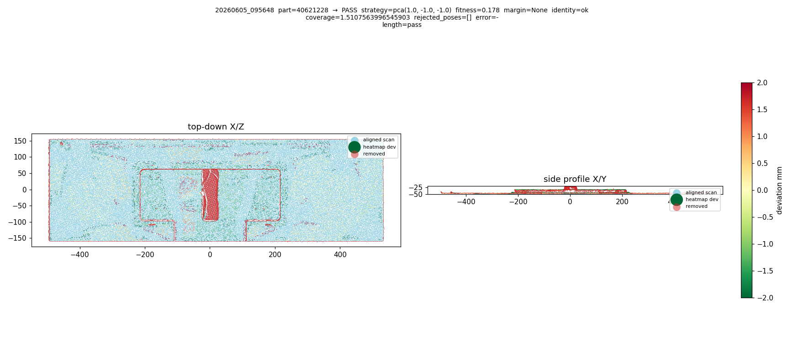
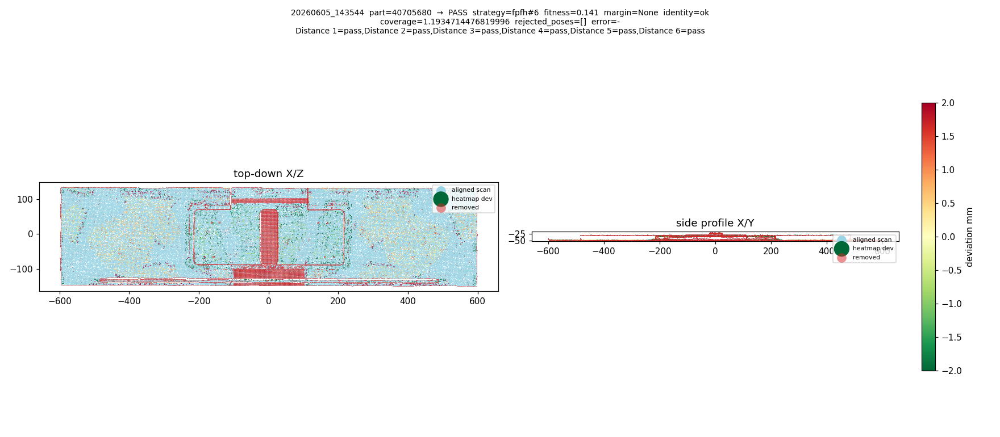

3D view unavailable (WebGL not supported or point data failed to load).
The hero normally shows the real pilot scan 20260605_095648 — 45,000 scan points over 25,000 CAD points of part 40621228. The review content below stands on its own.
Toggle QC — Scan-to-Measurement Pipeline
The short version
The station scans a part, compares it to its design file, and passes or fails it. Here is where that stood, what we changed, and what remains.
Issues we had
- Scans sometimes locked on upside-down or backwards, so measurements were taken in the wrong places yet looked confident.
- Scanning a part against the wrong design file could still produce passing measurements.
- The cleanup steps could quietly delete real parts of the scan, and the display made it look worse with checkerboard holes.
- A full scan took 1–5 minutes.
Issues we fixed
- Flipped poses are now detected and rejected — the system says “I can’t trust this scan” instead of guessing, verified by replaying the actual bad scan from the pilot.
- A new identity check refuses to measure when the part doesn’t match the design file’s size and shape.
- Every cleanup step now reports what it removed and blocks the scan if it removes too much, and the checkerboard display bug is fixed.
- Registration is up to ~6–25× faster (72s → 12–20s, measured on the same scan); a full scan now runs ~15–27s end-to-end.
What's left and why
- Refining the new safety thresholds — a first calibration pass is done from the 60-scan corpus (every pilot and reference scan replayed); refinement continues as more field scans arrive.
- Two near-identical part variants can’t be told apart from a top view alone — that needs a finer check.
- A missing small feature (like a 50mm notch) can still go unnoticed by the measurement — the fix is designed, queued behind the core work.
- Flat parts measure their long dimension with ±2–3mm repeatability — a camera-geometry limit, not a software bug (see Measurement); it needs a hardware or process answer.
- The merge and review of the four pull requests.
Trigger & CAD fetch
The station learns which part is coming and fetches its CAD file.
A QR scan by the operator, or an ERP call to /api/v1/erp/trigger, resolves the part number. The STEP file is downloaded from AWS and cached for the rest of the cycle.
During the pilot, wrong CAD files were sometimes loaded (including deliberately, as a test). The pipeline at the time measured against them anyway — the identity gate (section 5) now refuses to.
Capture
A ceiling camera takes one 3D snapshot of the part.
The MechMind camera captures 3,145,728 pixels on a fixed 2048×1536 grid; a typical scene yields ~240k–550k valid 3D points. Stage S1 stores the capture settings (depth range, ROI, smoothing) with the scan, so “what did the camera do” always has an answer on disk.
Preprocess
Cleanup: the raw snapshot is cut down to just the part — and every cut is now accounted for.
S2finite filter — drops no-return pixels (3.1M → 244k on a typical scan), labeledloss_source=camera.S3depth crop — window derived from the camera’s configured near/far range, not a hardcoded 500mm.S4statistical cleaning — measured 94–97% point and voxel retention across all pilot scans.
“Fractal chunks.” Over the point cap, the display sampler kept lowest-hash voxels — which selects nested square regions. It looked like missing data; it was only a display artifact.
Gates that could never fire. A kind-filter bug meant S4 could never trigger its safety block, and a stage could erase a whole region while keeping point counts plausible. Cleaning is now gated on occupied-voxel retention: block below 70%, against 94–97% measured headroom.
Registration
The scan is lined up with the CAD model. This is the slowest step — and where the worst failure mode lived.
The design: generate many candidate poses cheaply, refine them all, and let scoring — not luck — pick the winner.
Candidate pose generation
- Up to 10 FPFH+RANSAC attempts, pre-ranked, top 4 kept.
- 4 B-Rep-axis seeds + 4 PCA sign-flip seeds, never pruned — they rescue flat and partial scans.
- All candidates share a multi-scale ICP pyramid (5 scales), refined on 4 worker threads in two phases: every candidate runs the two cheap coarse scales; only the best 4 plus near-ties continue to the fine scales, with per-scale clouds capped at 150k points.
- Scored by a 9-component tuple; feature coverage is the component that discriminates flips.
Timing — the speed arc
12–20s registration, ~15–27s end-to-end, verified on the pilot control pair: FPFH+RANSAC 6.5s, pyramid 0.4s, ICP 4.0s. 8 of 12 candidates pruned at the coarse scales; the winning pose is identical to every previous run, with fitness slightly better (0.179 vs 0.177).
On June 5 a 180°-flipped pose won on a partial capture and reported an edge at +58mm as fact. Worse: the flipped pose fits the surface better. Surface fit alone cannot catch this.
| candidate | surface-median | feature coverage | verdict |
|---|---|---|---|
| brep(-1,-1,1) · correct | 0.46 mm | 1.1 mm | WINS |
| flipped poses | 0.45 mm (better!) | 101.6 mm | rejected |
Coverage is the only signal that separates them — so it sits in the scoring tuple as the flip discriminator.
- Scanner-oriented normal agreement rejects upside-down poses outright; the incident scan logs two candidates rejected at agreement −0.66.
- Ambiguity margin: the winner must lead its best credible rival by ≥5mm coverage, or the scan returns
ambiguous_registrationwith zero measurements. No confident wrong answers. - Full candidate persistence: every candidate’s transform, scores, and rejection reason is stored per scan.

Identity gate
Before measuring: is the part on the table actually the part the CAD describes? Three checks, all from coarse geometry:
- On-surface share — at least 35% of the scan within 5mm of the CAD surface.
- Footprint along CAD principal axes — excess: ±8mm before
ambiguous, ±16mm beforewrong_part. Deficit only ever yieldsambiguous_part(15mm tolerance) — a single view can scan short, never long. - Height excess — asymmetric by design: the camera can under-see height, never over-see it.
Replay results

Wrong family → registration collapses first; the gate never has to argue. Matched parts → gate ok:

Honest limits
Sibling variants look identical from above. A01 vs A03 top-view envelopes: 876.7×275.2 vs 876.6×274.4mm. No footprint rule can separate 0.1mm of envelope.
A missing 50mm notch false-passes today. A continuous straight edge contains point pairs at every separation, so endpoint snapping reproduces the nominal length even when the notch isn’t there. The fix (edge-support validation + residual-region clustering) is designed and queued behind core work.
The footprint deficit rule over-rejected partial captures. A single camera view loses up to ~8mm at glancing edges and far more on partial captures, so deficit now only ever yields ambiguous_part (15mm tolerance); excess — impossible for the right part — stays definitive. Calibrated from the batch run over every pilot scan.
Validated against every pilot scan
The autonomous batch evaluation replayed the full corpus — 60 scans (42 pilot + 18 reference) — through the pipeline. Zero crashes.
- All 5 known incidents blocked with zero measurements emitted: the flipped scan, 2 wrong-CAD scans, and 2 oversized junk captures.
- All known-good controls still pass; all legitimate station FAILs still fail.
Calibration findings — amber to green
The first pass over-rejected ~9 known-good scans, for two root causes. Both were fixed the same day:
- ICP “basin twins.” Two near-identical minima a few mm apart looked like a rival pose with a 0.2–0.5mm margin. Fix: same-pose deduplication widened from 2.5mm to 10mm.
- Footprint deficit treated as
wrong_part. A single camera view loses up to ~8mm at glancing edges and far more on partial captures. Fix: deficit now only ever yieldsambiguous_part(15mm tolerance); excess — impossible for the right part — stays definitive.
16-scan re-validation after tuning
| scan | role | before tuning | after tuning |
|---|---|---|---|
| 143544 | station PASS, falsely flagged | ambiguous_registration | PASS ✓ |
| ref_105545 | known-good reference | ambiguous_part | measured ✓ |
| ref_105658 | known-good reference | ambiguous_part | measured ✓ |
| 102135 | flipped-scan incident | blocked | still blocked ✓ |
| 113100 | wrong-CAD incident | blocked | still blocked ✓ |
| 095648 / 140358 / 151511 | known-good controls | pass | pass ✓ |
| 150534 | genuine coverage near-tie | blocked | still blocked · under investigation |
The incidents are still blocked — now labeled ambiguous_part: “can’t confirm identity,” the honest verdict for a partial capture. One residual case remains under investigation: 150534, a genuine coverage near-tie.

Measurement
Each requested feature is measured against the aligned scan.
Edges and distances use a CAD-proximity-filtered support cloud; planes and slots use the full cleaned scan. When there is nothing to snap to, the result says “no scan coverage at endpoint (nearest point N mm away)” instead of quietly extrapolating.
- Matched part (validation): 6 distances, all within ±2.6mm.
- Notch part: the 3 annotated notch edges measured 51.4 / 48.1 / 48.0mm at ≤0.13mm deviation under the correct pose.
Flat treads measure their long dimension with ±2–3mm repeatability. Seen from above, a flat board is pinned along its length only by the few scan points on its two end edges — the broad top surface says nothing about where the part starts and stops. With so little geometry constraining that axis, the solved pose (and every distance measured along it) can legitimately land 2–3mm differently between scans or software versions, while width and height stay stable.
We saw this directly in the corpus: scan 132636 disagrees along the length axis between the station and every version of our pipeline — the differences are translations of the same correct pose, not registration errors. No software change can add information the camera did not capture.
What can address it: reporting per-axis confidence with each measurement (so a ±5mm tolerance on a weakly-constrained axis is flagged), fixturing or a second angled view that exposes the part ends, or tolerance policy that treats along-axis distances differently. This needs a hardware/process decision, not a patch.
Results & evidence
Every decision the pipeline makes leaves evidence you can inspect.
- Heatmap + overlay ship to the viewer as a base64
Float32Arrayover QWebChannel — ~4× smaller than a JSON payload. - Removed-points toggle in the viewer, colored by loss source.
- Per-stage reports and every registration candidate + margin persisted to SQLite.
- One shared result builder for the ERP and UI paths — they can never disagree.
The 60-scan batch evaluator (tools/batch_eval_scans.py) replays the corpus and renders annotated evidence per scan. The images on this page came out of it — see the batch validation.
State of the work
Four stacked PRs, reviewed bottom-up:
| PR | scope | issue | status |
|---|---|---|---|
| #45 | Foundation | — | all review comments resolved · CI green awaiting review |
| #54 | Orientation + margin + speed | TOGGLEQC-139 | stacked on #45 |
| #55 | Identity gate | TOGGLEQC-144 | stacked on #54 |
| #56 | Preprocessing gates | TOGGLEQC-138 | stacked on #55 |
Open items
- tuning Threshold calibration — first pass done from the 60-scan corpus; refinement continues with more field scans.
- investigating Scan 150534 — a genuine coverage near-tie, still blocked.
- designed Notch-class fix (edge-support validation + residual-region clustering).
Toggle QC architecture review · 2026-06-11 · Samay, Mateo, Tanaya · all numbers from the 2026-06-05 Viewrail pilot and the 60-scan batch corpus.